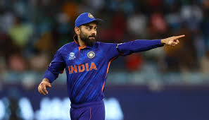
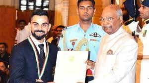
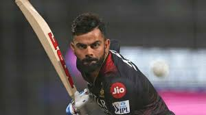

About Virat Kohli
Virat Kohli, born on November 5, 1988, in Delhi, India, is a cricketing phenomenon whose journey in international cricket has been nothing short of extraordinary. From his early days as a young and talented cricketer, he has grown to become one of the most influential and celebrated figures in the cricketing world.
Kohli's passion for the game and his unwavering commitment to excellence have set him apart. His aggressive and fearless approach to batting has earned him a reputation as one of the most consistent and prolific run-scorers in cricket history. Known for his ability to chase down targets and perform under pressure, he has created.
As the captain of the Indian cricket team, Virat Kohli has led his squad to numerous victories and milestones. Under his leadership, India achieved historic Test series wins overseas, including notable victories in Australia and South Africa. His dedication to fitness and work ethic has set new standards for professional athletes.
One of the most remarkable aspects of Kohli's career is his incredible consistency. He has broken multiple records, including becoming the fastest cricketer to reach 8,000, 9,000, and 10,000 runs in One Day Internationals (ODIs). Kohli also holds the record for the most centuries in successful ODI run-chases, showing is ability to carry his team to victory.
Off the field, Virat Kohli is known for his philanthropic efforts and active involvement in social causes. He uses his platform and influence to support various charitable initiatives, making a positive impact beyond the boundaries of the cricket field.He is the person who just wants to win every game for his team no matter what it take.
This webpage is dedicated to celebrating the extraordinary career and contributions of Virat Kohli, a cricketer whose name will forever be etched in the annals of cricketing history.
Career Highlights
Batting Excellence
Virat Kohli is known as the best player in the world and it is just because of his consistency and his hardwork.He is considered as Goat.

Captaincy Achievements
Kohli has helped India to win many matches under his captaincy.He is the person who help India to win in abroad.He is genius.
Awards and Recognitions
During his life, Kohli has received many awards which are just dream of a common man.He is just unstoppable.He owns lot of awards.
Virat Skills and Secret to Success
Talent
As a multi-talented person, Kohli excells in almost every phase of life beside cricket such as football,badminton and he is also a good speaker due to his excellent communication skills. Further, he is nice singer and has also shown this skill to the whole world.He always wamts to achieve more and this is what makes him.

Success Mantra
Kohli secret to success lies in his determination and his consistency as he is willing to work hard everyday of his life without any compromise .He is the person who has took cricket to the next level. He works on the oath of Never give up.He always gives extra efforts in his training for getting proper results in the field.
